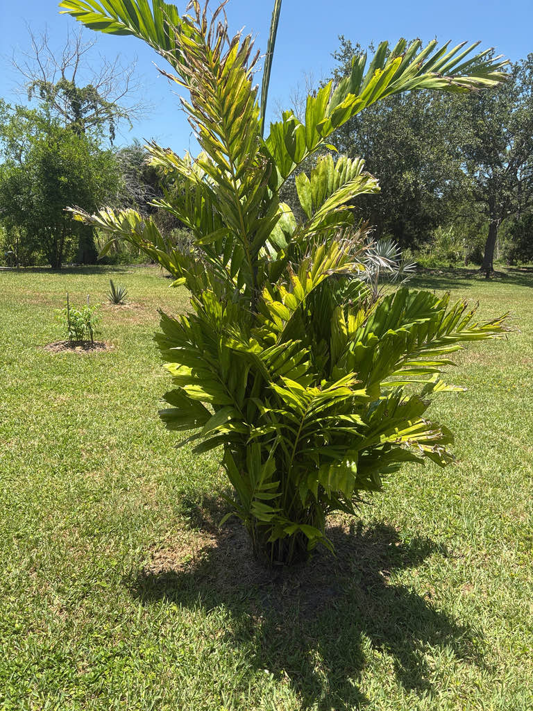

- The genus name Ptychosperma comes from the Greek for 'folded seed' — crack one of those dark purple fruits open and the seed inside is visibly grooved, pressed into channels like creases in cloth. Every species in the genus shares this odd detail.
- Scheffer's Palm is named for Rudolf Herman Christiaan Carel Scheffer (1844–1880), the Dutch botanist who directed the renowned Bogor Botanical Gardens in Java — the great 19th-century clearinghouse for tropical plant knowledge — and whose brief career ended at just 35.
- A solitary-variety plant survived a 28-degree night in St. Petersburg, zone 9B, without even bronzing — cold hardiness that surprises most people who assume any New Guinea rainforest palm would fold at the first frost.
- The clumping form produces dense clusters of deep-purple drupes that birds find irresistible, making this palm one of the more reliable bird-attractors in a South Florida garden — especially in the cooler months after the fruit ripens.
Scheffer's Palm is native to the lowland rainforests of Papua New Guinea, where it grows in the warm, humid coastal and near-coastal zones typical of the island's tropical lowlands. In its home range it is a forest understory palm, thriving where moisture is reliable and soils are well-supplied with organic matter.
It arrived in Florida cultivation as a specialty ornamental and remains less common in local landscapes than its close relatives the MacArthur Palm and the Solitaire Palm. Its adaptability to Florida's alkaline soils, tolerance of brief frost, and tidy growth habit have earned it a small but loyal following among palm enthusiasts in South and Central Florida.
- The genus Ptychosperma ranges from the Moluccas through New Guinea and the Solomon Islands to northeastern Australia, and all of its members share two traits visible on every plant: a prominent crownshaft and leaflets with blunt, jagged tips — the characteristic called praemorse, from the Latin for 'bitten off.' The tips look almost gnawed rather than pointed, a fieldmark that sets the whole genus apart from most other feather palms.
- The species epithet schefferi almost certainly honors Rudolf Herman Christiaan Carel Scheffer, the Dutch botanist who directed the Bogor Botanical Gardens in Java during the 1870s. The formal name was coined by Odoardo Beccari and later published by Ugolino Martelli — a naming chain that connects two of the 19th century's most important figures in tropical palm taxonomy.
- Scheffer's botanical career lasted barely a decade, but his work cataloging the plants of the Dutch East Indies left a lasting mark on tropical botany.
- In the landscape, Scheffer's Palm stands out for its versatility. The clumping form can be left to develop into a dense multi-stemmed screen, or selectively thinned to reveal individual trunks as accent stems — two quite different effects from the same plant.
- Its compact crown and slender trunks, each only about two inches in diameter, mean it fits comfortably where larger palms would overwhelm the space.
The inflorescences emerge below the crownshaft and bear small white flowers on the same plant as both male and female blooms, allowing each individual to set fruit without a separate pollen source nearby. Pollinating insects visit during bloom.
The real draw for wildlife is the fruit. The dark purple drupes that follow flowering are a noted bird attractant — vivid, abundant, and accessible once ripe. In its home range and in tropical cultivation, birds are the primary seed dispersers.
Unlike the closely related Solitaire Palm, Ptychosperma schefferi has not been documented establishing itself invasively in Florida's natural areas, so the fruit's appeal to birds here is straightforwardly positive.
Small white male and female flowers appear on the same inflorescence, which emerges below the crownshaft. Because both sexes occur on the same plant, a single individual can set fruit without cross-pollination from a separate tree.
Dark purple drupes, each containing a single deeply grooved seed — the 'folded seed' that gives the genus Ptychosperma its name. Fruit is not a food source for people.
Pinnately compound, arching, deep glossy green. The leaflets are broad and wedge-shaped, and their tips are bluntly squared and jagged rather than pointed — a trait called praemorse, shared across the genus. Young plants often display notably wide, almost undivided leaflets, which can look quite different from the mature frond.
The crownshaft is dark green with a whitish waxy coating — a reliable marker for the genus. Trunks are slender, roughly two inches in diameter, ringed with leaf-scar marks, and may be solitary or grouped in a tight cluster of multiple stems from the same base.
Identify this palm by three features. First, look for slender, bamboo-like trunks — each only about two inches across — marked with neat, pale ring scars, rising singly or in a tight cluster from the same base. Second, examine the leaflets: they end in bluntly squared, jagged tips, almost as if nipped off, rather than tapering to a point.
Third, look just below the smooth green crownshaft for either branching white flower clusters or heavy, hanging bundles of glossy dark-purple fruit.
The fruit is not a food source — the flesh is minimal and not worth eating — but no toxicity to people, dogs, or cats has been documented. Otherwise this palm poses no meaningful safety concern.
In Florida landscapes this palm is sometimes compared favorably to the MacArthur Palm (Ptychosperma macarthurii), which it resembles in general form but tends to be somewhat smaller and more compact. The tighter crown and slender footprint make it a practical choice for spots where a MacArthur would eventually crowd out its neighbors.
Growers should be aware that hybridization among cultivated Ptychosperma species is possible and has been documented; plants labeled as P. schefferi in the nursery trade may occasionally be hybrids or misidentified relatives.


- © Randall Carter (CC-BY-NC), via iNaturalist